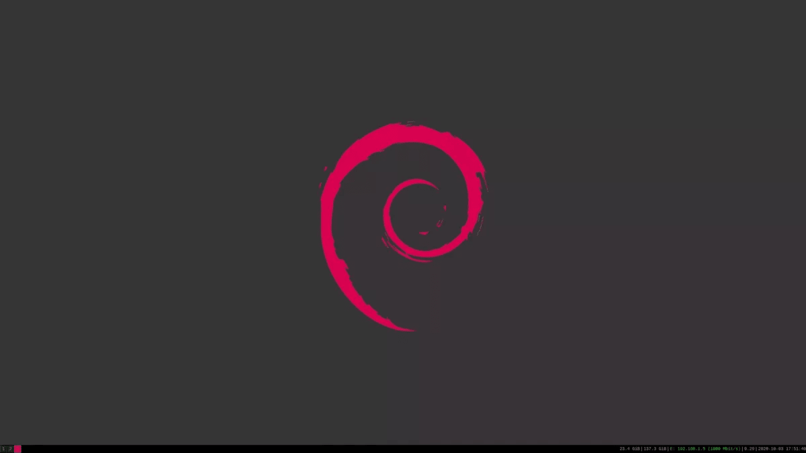

September, 2021
Arpon OS got 2 branches, the project based on nothing, an os made from scratch, and the second the os from Debian, the os from scratch is in alpha, it works, but without internet connection, and nothing to install program easily... but neckfire want to keep the development becaause he want to make an os all made by the NFT. And the OS based on debian, it works, with network connection, tools to install program easilly (apt) and Xserver.


This edition is in alpha, it works but only on shell and without network connection and tools to install program easilly (only dpkg, but it need to downloadthe package with ALL depedencies before install the program, trust me, this take too much times, so this edition is to help us on the development...

this is the official version of Arpon OS, with network connection, tools to install program easilly (apt) and a Xserver, entirely usable, neckfire use it everydays on his olds laptops, this édition uses -200M of Ram with an Xserver opened (very usefull for old pc). the bigest problem is that, we need an installation program. the OS is provided by a live ISO, but we don’t know how to copy the system on another drive so, we need your help !